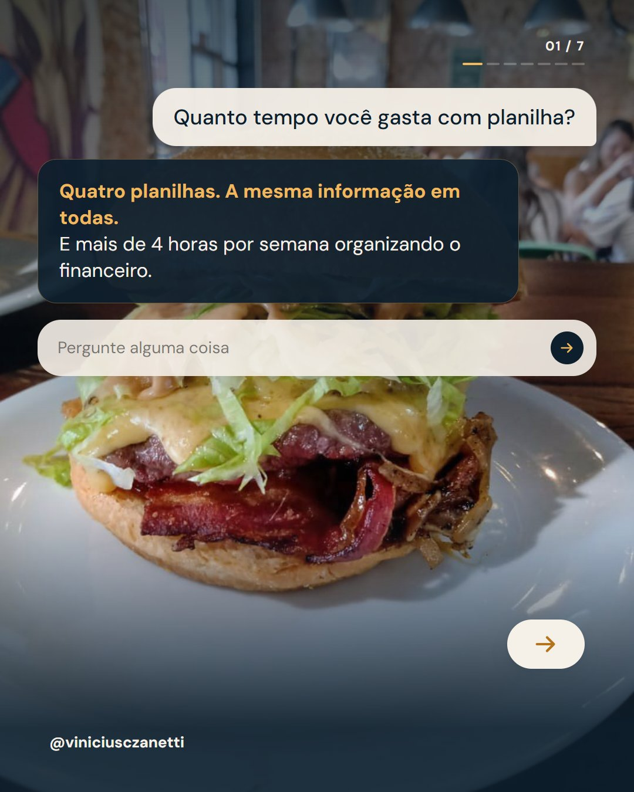

Quatro planilhas e um segundo emprego: por que o controle do restaurante não se sustenta
Estoque, compras, ficha técnica e financeiro em arquivos separados, com a mesma informação digitada várias vezes. Vinícius Zanetti conta por que trocou as planilhas e qual é a régua de um controle que funciona.
Publicado em 16/11/2026
Uma planilha para o estoque. Outra para as compras. Outra para a ficha técnica. Mais uma para o financeiro. Em boa parte dos restaurantes pequenos, o controle existe, mas está espalhado em arquivos que repetem a mesma informação e que só valem alguma coisa se alguém lembrar de atualizar.
O consultor Vinícius Zanetti, que diz ter sempre gostado de planilha, descreveu o problema num carrossel publicado no Instagram em 23 de outubro: quatro planilhas com a mesma informação e mais de 4 horas por semana para organizar o financeiro. Para ele, aquilo deixou de ser controle.

"Eu sempre gostei de planilha. Mas quatro planilhas com a mesma informação e quatro horas por semana alimentando tudo não é controle, é um segundo emprego."Vinícius Zanetti, na legenda do carrossel "Chega de planilha complicada"
Quatro horas por semana são mais de 16 horas por mês. É tempo do dono ou de alguém da equipe, tirado da cozinha, do salão ou das vendas. E, como o carrossel mostra, o problema não é só o tempo.
Por que a planilha do restaurante sempre fica desatualizada?
Porque ela depende de alguém lembrar. No dia corrido, o lançamento é a primeira coisa que fica para depois. E o depois vira o fim de semana, que vira o fim do mês.
"Planilha não se preenche sozinha. Se o dia foi corrido e ninguém lançou, o número da semana já nasce errado."Vinícius Zanetti, no carrossel "Chega de planilha complicada"
O livro Restaurante no Controle, de Vinícius, trata o assunto na etapa que chama de Garante, a da execução. A ideia é direta: ferramenta que não é alimentada não protege ninguém.
"Um fluxo de caixa que não é alimentado diariamente não serve. Uma ficha técnica que o cozinheiro desconhece não protege a margem."Vinícius Zanetti, no livro Restaurante no Controle, capítulo Garante
O que acontece quando a mesma informação está em várias planilhas?
Cada cópia é uma chance a mais de erro. A compra do bacon entra na planilha de compras, depois no estoque, depois no financeiro. Se o valor for digitado errado em uma delas, as outras passam a discordar. E ninguém sabe qual está certa.
O carrossel resume o efeito: um número digitado errado numa aba quebra a conta das outras três. O pior é o momento em que o erro aparece.
"E você só descobre no fim do mês, quando já tomou decisão em cima dele."Vinícius Zanetti, no carrossel "Chega de planilha complicada"
A decisão pode ser um reajuste de preço, um corte de compra ou uma promoção. Feita em cima de um CMV errado, ela corrige o problema que não existe e deixa passar o que existe.
Quais controles o restaurante precisa ter?
Os quatro do carrossel são os que o livro coloca na base da gestão. E eles não funcionam separados, porque um alimenta o outro.
| Controle | O que responde | Depende de |
|---|---|---|
| Ficha técnica | Quanto custa cada item do cardápio | Preço atualizado das compras |
| Compras | O que pedir, quanto e de quem | Estoque contado e consumo |
| Estoque | O que tem na câmara e o que sumiu | Contagem e ficha técnica |
| Financeiro | Quanto entrou, saiu e sobrou | Compras e vendas lançadas |
No capítulo Estrutura, o livro mostra por que a ligação importa. A ficha técnica bem feita diz quanto de cada ingrediente cada prato consome. Com ela, dá para comparar o consumo teórico, o que a cozinha deveria ter gasto, com o consumo real, o que saiu do estoque. Quando os dois não batem, há desperdício, desvio ou erro de processo. Essa comparação é quase impossível quando a ficha técnica está num arquivo e a contagem, em outro.
O mesmo vale para o CMV. A fórmula usa estoque inicial, compras e estoque final, e a conta só fecha se esses três números vierem da mesma fonte. O blog explica o cálculo em CMV não é compras do mês e a lógica do pedido em Quanto comprar de cada insumo.
Planilha ou sistema: qual é melhor para o restaurante?
A resposta do carrossel não é sobre ferramenta. É sobre quem trabalha para quem.
| O que acontece | O que devia acontecer |
|---|---|
| Mais tempo alimentando a planilha | Mais tempo olhando o que ela diz |
Uma planilha única, simples e lançada todo dia é melhor que um sistema que ninguém abre. E quatro planilhas que repetem informação perdem para qualquer ferramenta em que o dado é lançado uma vez só. A régua que Vinícius propõe é a frequência, não a sofisticação.
"Controle bom é o que você consegue manter toda semana. Sem virar um segundo emprego."Vinícius Zanetti, no carrossel "Chega de planilha complicada"
Foi por isso que ele trocou as planilhas por um app que reúne estoque, compras, ficha técnica e financeiro no mesmo lugar. No carrossel, ele resume a vantagem em uma frase: lança uma vez e a informação aparece onde precisa. O app é o Zatti Hub, app de gestão da Zatti para o celular, que faz a contagem de estoque por setor, avisa o ponto de reposição, calcula o CMV a partir da contagem e funciona junto com o sistema de vendas que o restaurante já usa.
O que o dono de hamburgueria e pizzaria faz com isso
Antes de trocar de ferramenta, vale medir o controle que já existe. Quatro perguntas ajudam:
- Quantas vezes o mesmo dado é digitado? Se a nota de compra entra em mais de um lugar, cada entrada extra é uma chance de erro.
- Quanto tempo a equipe gasta lançando? Anote por uma semana. O número costuma assustar.
- Qual foi o último dia em que tudo estava em dia? Se ninguém sabe, o controle já está atrasado.
- Que decisão o controle ajudou a tomar no último mês? Dado que não orienta decisão, diz o livro, não merece espaço no painel de gestão.
Se as respostas mostram mais tempo alimentando do que olhando, o problema não é falta de disciplina da equipe. É excesso de trabalho repetido. O caminho é reduzir o número de lugares onde a informação mora, seja juntando as planilhas, seja usando uma ferramenta que faça isso.
Perguntas frequentes
Quais planilhas um restaurante precisa ter?
Os controles básicos são ficha técnica, compras, estoque e financeiro. O problema aparece quando cada um fica num arquivo separado e a mesma informação precisa ser digitada várias vezes.
Planilha serve para controlar restaurante?
Serve, desde que seja lançada com frequência. A régua de Vinícius Zanetti é simples: controle bom é o que o restaurante consegue manter toda semana, sem virar um segundo emprego.
Por que o controle de estoque em planilha dá errado?
Porque depende de alguém lembrar de lançar. No dia corrido o lançamento fica para depois, e um número digitado errado numa aba quebra as contas das outras, o que costuma aparecer só no fim do mês.
Como ligar ficha técnica e estoque?
A ficha técnica diz quanto cada prato consome. Multiplicada pelas vendas, dá o consumo teórico, que se compara com o que saiu do estoque. A diferença indica desperdício, desvio ou erro de processo.
Fontes
- Vinícius Zanetti no Instagram: carrossel "Chega de planilha complicada" (23/10/2026).
- Vinícius Zanetti, Restaurante no Controle: capítulos Estrutura (ficha técnica e controle de estoque), Garante e Acompanha.
- Zatti Consultoria: página do Zatti Hub (funções do app, conferida em 16/11/2026).